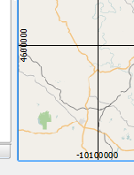

In the Grid Decoration dialog, do the following:
- Click the checkbox to Enable gridr.
- Set Interval X as 100000
- Set Interval Y as 100000
- Keep Grid type as Line.
- Click the checkbox Draw annotation to enable it.
- Set Annotation direction as Boundary direction
- Keep the Distance to map frame as 2.
- Keep Coordinate precision as 0
- Keep Set direction automatically enabled
- Click OK to apply the settings and close the dialog
A grid will appear on map canvas, showing labels with the X and Y coordinates next to it's lines.
